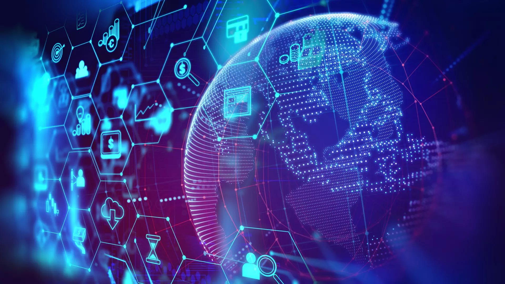

Seja Bem-Vindo(a) ao meu site!!
Bem-vindo ao meu site!
Aqui, vou explicar o que é o PI (Projeto Integrador), apresentar nosso grupo, nosso tema e o desenvolvimento do trabalho até o momento.
Fique à vontade para navegar e conhecer nossa experiência até agora. Ao longo do projeto, temos aprendido mais sobre o mundo das finanças e como compartilhar esse conhecimento para ajudar as pessoas a cuidarem melhor do seu futuro financeiro.
Acesse o menu horizontal acima e escolha uma das categorias para explorar mais sobre finanças pessoais, aprender a tomar decisões mais conscientes e melhorar sua saúde financeira.
Nosso objetivo é tornar o universo das finanças mais acessível e fácil de entender, para que todos possam planejar melhor seu futuro financeiro.